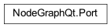

Port¶
- class NodeGraphQt.Port(node, port)¶
The
Portclass is used for connecting one node to another.
See also
For adding a ports into a node see:
BaseNode.add_input(),BaseNode.add_output()- Parameters
node (NodeGraphQt.NodeObject) – parent node.
port (PortItem) – graphic item used for drawing.
Methods:
type_()Returns the port type.
Returns if the ports is a single connection or not.
node()Return the parent node.
name()Returns the port name.
visible()Port visible in the node graph.
set_visible([visible, push_undo])Sets weather the port should be visible or not.
locked()Returns the locked state.
lock()Lock the port so new pipe connections can’t be connected and current connected pipes can’t be disconnected.
unlock()Unlock the port so new pipe connections can be connected and existing connected pipes can be disconnected.
set_locked([state, connected_ports, push_undo])Sets the port locked state.
Returns all connected ports.
connect_to([port, push_undo])Create connection to the specified port and emits the
NodeGraph.port_connectedsignal from the parent node graph.disconnect_from([port, push_undo])Disconnect from the specified port and emits the
NodeGraph.port_disconnectedsignal from the parent node graph.clear_connections([push_undo])Disconnect from all port connections and emit the
NodeGraph.port_disconnectedsignals from the node graph.add_accept_port_type(port_name, port_type, …)Add a constrain to “accept” a pipe connection.
Returns a dictionary of connection constrains of the port types that allow for a pipe connection to this node.
add_reject_port_type(port_name, port_type, …)Add a constrain to “reject” a pipe connection.
Returns a dictionary of connection constrains of the port types that are NOT allowed for a pipe connection to this node.
Attributes:
- type_()¶
Returns the port type.
- Port Types:
NodeGraphQt.constants.IN_PORTfor input portNodeGraphQt.constants.OUT_PORTfor output port
- Returns
port connection type.
- Return type
str
- multi_connection()¶
Returns if the ports is a single connection or not.
- Returns
false if port is a single connection port
- Return type
bool
- node()¶
Return the parent node.
- Returns
parent node object.
- Return type
- name()¶
Returns the port name.
- Returns
port name.
- Return type
str
- visible()¶
Port visible in the node graph.
- Returns
true if visible.
- Return type
bool
- set_visible(visible=True, push_undo=True)¶
Sets weather the port should be visible or not.
- Parameters
visible (bool) – true if visible.
push_undo (bool) – register the command to the undo stack. (default: True)
- locked()¶
Returns the locked state.
If ports are locked then new pipe connections can’t be connected and current connected pipes can’t be disconnected.
- Returns
true if locked.
- Return type
bool
- lock()¶
Lock the port so new pipe connections can’t be connected and current connected pipes can’t be disconnected.
This is the same as calling
Port.set_locked()with the arg set toTrue
- unlock()¶
Unlock the port so new pipe connections can be connected and existing connected pipes can be disconnected.
This is the same as calling
Port.set_locked()with the arg set toFalse
- set_locked(state=False, connected_ports=True, push_undo=True)¶
Sets the port locked state. When locked pipe connections can’t be connected or disconnected from this port.
- Parameters
state (Bool) – port lock state.
connected_ports (Bool) – apply to lock state to connected ports.
push_undo (bool) – register the command to the undo stack. (default: True)
- connected_ports()¶
Returns all connected ports.
- Returns
list of connected ports.
- Return type
list[NodeGraphQt.Port]
- connect_to(port=None, push_undo=True)¶
Create connection to the specified port and emits the
NodeGraph.port_connectedsignal from the parent node graph.- Parameters
port (NodeGraphQt.Port) – port object.
push_undo (bool) – register the command to the undo stack. (default: True)
- disconnect_from(port=None, push_undo=True)¶
Disconnect from the specified port and emits the
NodeGraph.port_disconnectedsignal from the parent node graph.- Parameters
port (NodeGraphQt.Port) – port object.
push_undo (bool) – register the command to the undo stack. (default: True)
- clear_connections(push_undo=True)¶
Disconnect from all port connections and emit the
NodeGraph.port_disconnectedsignals from the node graph.- Parameters
push_undo (bool) – register the command to the undo stack. (default: True)
- add_accept_port_type(port_name, port_type, node_type)¶
Add a constrain to “accept” a pipe connection.
Once a constrain has been added only ports of that type specified will be allowed a pipe connection.
Implemented in
v0.6.0See also
NodeGraphQt.Port.add_reject_ports_type(),NodeGraphQt.BaseNode.add_accept_port_type()- Parameters
port_name (str) – name of the port.
port_type (str) – port type.
node_type (str) – port node type.
- accepted_port_types()¶
Returns a dictionary of connection constrains of the port types that allow for a pipe connection to this node.
- Returns
{<node_type>: {<port_type>: [<port_name>]}}
- Return type
dict
- add_reject_port_type(port_name, port_type, node_type)¶
Add a constrain to “reject” a pipe connection.
Once a constrain has been added only ports of that type specified will be rejected a pipe connection.
Implemented in
v0.6.0See also
NodeGraphQt.Port.add_accept_ports_type(),NodeGraphQt.BaseNode.add_reject_port_type()- Parameters
port_name (str) – name of the port.
port_type (str) – port type.
node_type (str) – port node type.
- rejected_port_types()¶
Returns a dictionary of connection constrains of the port types that are NOT allowed for a pipe connection to this node.
- Returns
{<node_type>: {<port_type>: [<port_name>]}}
- Return type
dict
- property color¶
- property border_color¶